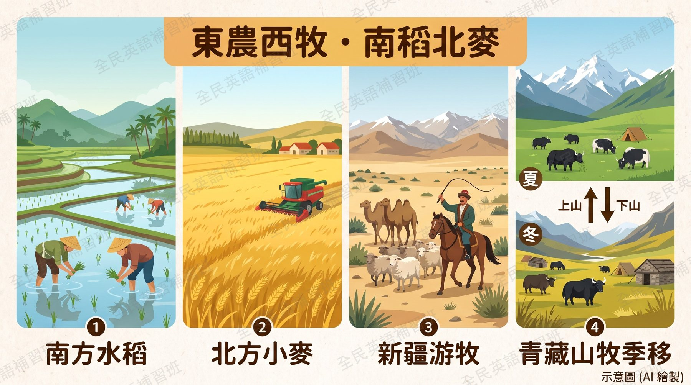
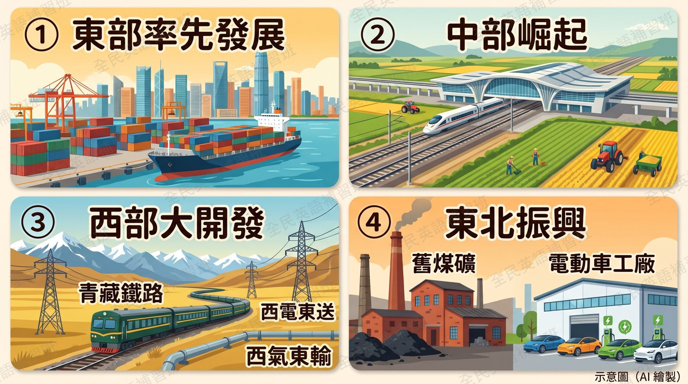
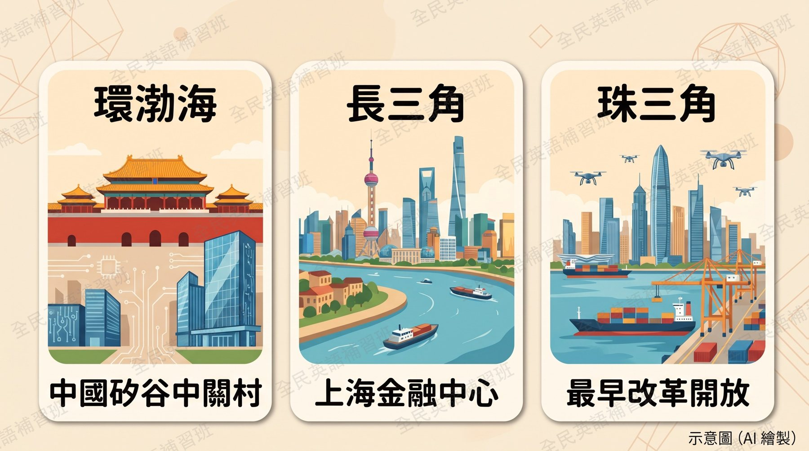

第3課｜中國的產業發展與地區差異
一、傳統農牧業

⭐ 三版共通中國傳統農牧業受地形、氣候影響最大，形成兩大特徵：
| 特徵 |
說明 |
| 東農西牧 |
東半部平原廣、降水多 → 農業；西半部乾燥、高原多 → 畜牧 |
| 南稻北麥 |
以秦嶺—淮河為界：以南溫暖溼潤種水稻（水田）；以北較乾冷種小麥、高粱（旱田） |
西部三種畜牧方式【段考重點】
| 地區 |
方式 |
原因 |
| 內蒙古高原東側 |
在水草豐美的河岸放牧 |
降水較多、草原較好 |
| 新疆 |
逐水草而居的游牧 |
乾燥少雨，要不斷找水源和牧草 |
| 青藏高原 |
山牧季移 |
夏天上山、冬天下山，順著季節換牧場 |
📘 康軒犛牛能在寒冷高山馱重物，稱「高原之舟」；駱駝適應沙漠，稱「沙漠之舟」。
⚠️ 易混淆「游牧」是水平移動找水草（新疆）；「山牧季移」是上下（垂直）移動換牧場（青藏）。
二、農牧業的轉型與挑戰
⭐ 三版共通二十世紀中葉後人口暴增、糧食需求大，加上第一級產業人口與產值比例下降，中國用以下方式確保糧食：
- 機械化、科技化：東北平原大型機械耕作；無人機噴藥康軒；太陽能捕蟲燈減少農藥翰林。
- 專業化、商品化：因地制宜生產優勢農產品。例：內蒙古企業化乳牛場、機械轉盤擠奶；新疆棉花產量全國第一南一。
- 設立大型糧食基地康軒：東北平原、長江中下游平原等。
- 改善交通：農產品快速送到市場。
- 增加糧食進口：中國是農產大國，也是糧食進口大國。
🎯 段考重點糧食集中生產的風險：糧食基地一遇到水災、旱災，可能造成全國性缺糧。
📘 翰林中國人均可耕地面積低於世界平均（山多平原少、農地轉作他用）；北方缺水，靠「南水北調」把南方多的水引到北方（因為降水量南多北少）。
三、工業發展的條件
⭐ 三版共通
| 條件 |
中國的情形 |
| 礦產 |
煤、鐵、石油多在北部 → 早期重工業（鋼鐵、石化）設在原料產地；南部礦產少，以紡織等輕工業為主 |
| 交通 |
東半部鐵、公路密集，西半部稀疏；交通常是經濟發展的指標 |
| 政策 |
改革開放、經濟特區帶動發展 |
| 市場 |
人口多、消費力提升 |
📘 康軒經濟起飛後礦產不夠用、要大量進口 → 水運便利的沿海與長江沿岸成為設廠首選。
四、改革開放與世界工廠
⭐ 三版共通
- 改革開放：1978年提出（1980年代實施），「對內改革、對外開放」，放寬外貿限制。
- 經濟特區：先在東南沿海設 5 個——深圳、珠海、汕頭、廈門、海南；2010年在新疆喀什設第 6 個。
- 優勢：廉價勞力、交通便利、優惠稅率 → 吸引外資設廠，先發展勞力密集產業（紡織、製鞋、玩具），出口導向。
- 成功後擴大到東部沿海、長江沿岸，再到內陸重點地區；並從勞力密集轉向技術密集的高科技產業。
- 石化、鋼鐵、電子、汽車生產規模領先世界 → 「世界工廠」。
🎯 段考重點產業結構變化：第二、三級產業的就業人口與產值比例超越第一級產業 → 工業是中國經濟成長的主要動力。
📘 南一深圳原本是以農漁業為主的邊陲小鎮，設經濟特區後變成高樓林立的大都市，現在是新創產業中心。康軒另外提到：深圳近年也受房地產泡沫化與工廠大量外移困擾。
五、區域差異與四大經濟區

⭐ 三版共通改革開放優先發展東南沿海，中、西部資金少、技術落後、交通不便 → 沿海與內陸、城市與鄉村差距擴大。政府分成四大經濟區、各有政策：
| 經濟區 |
特色與問題 |
政策 |
| 東部 |
開放最早、勞力足、交通便利，經濟最發達 |
東部率先發展：產業升級、新創 |
| 中部 |
位居內陸、發展不如東部，但是糧倉、工資較低 |
中部崛起：承東啟西，吸引設廠 |
| 西部 |
林、牧、礦產豐富，但交通不便 |
西部大開發（2000年起）：西電東送、西氣東輸、青藏鐵路、南水北調 |
| 東北 |
早期重工業重心，礦產枯竭、設備老舊 |
東北振興：產業轉型（如電動車） |
📘 翰林東北例子：遼寧撫順原為亞洲最大露天煤礦，煤礦枯竭後轉型為博物館。
📘 康軒中國都市化程度2011年超過51% → 表示都市人口已超過鄉村人口；都市化程度低的省分多在西部。
⚠️ 易混淆「西部大開發」的工程是把西部資源送到東部（西電東送、西氣東輸）；「南水北調」是把南方的水調到北方。
六、三大經濟圈與核心都市

⭐ 三版共通特區經驗推廣後，東部沿海形成三大經濟圈：
| 經濟圈 |
核心 |
特色 |
| 環渤海 |
北京、天津南一 |
政治與交通核心；重工業＋高科技；北京中關村＝「中國矽谷」 |
| 長三角 |
上海 |
工商業最發達、都市化最高；金融中心，電子、通訊、電腦重鎮 |
| 珠三角 |
廣州、深圳、香港、澳門 |
最早改革開放；港澳資金湧入，新創產業中心 |
📘 南一產業群聚：深圳高科技、上海金融、廣州製造。但高端晶片、關鍵半導體設備仍要靠進口。
主要都市【康軒】：上海——海岸線中點、長江出海口，最大金融中心；北京——首都、古蹟多；廣州——珠江門戶、南部交通樞紐；深圳——由鄉村變新興都市典範。
第3課易混淆總整理
| 容易搞混 |
正確說法 |
| 南稻北麥的分界 |
秦嶺—淮河（不是長江、也不是黑河—騰衝線） |
| 游牧 vs 山牧季移 |
新疆逐水草而居 vs 青藏高原依季節上下山 |
| 第一批經濟特區 |
深圳、珠海、汕頭、廈門、海南（5個）；喀什是2010年第6個 |
| 中國矽谷 |
北京中關村（屬環渤海），不是深圳 |
| 最早改革開放的經濟圈 |
珠三角；工商業最發達的是長三角 |
| 都市化程度51% |
都市人口過半，不是都市面積過半 |
第3課關鍵詞彙表
| 詞彙 |
意思 |
| 東農西牧、南稻北麥 |
中國傳統農牧業的空間分布 |
| 山牧季移 |
隨季節在山上、山下換牧場 |
| 商品糧基地 |
大規模生產糧食供應全國的地區 |
| 改革開放 |
1978年起對內改革、對外開放 |
| 經濟特區 |
以優惠吸引外資、出口導向的特別區域 |
| 勞力密集／技術密集 |
靠大量人工 vs 靠技術與研發 |
| 世界工廠 |
全球大量工業產品在此製造 |
| 四大經濟區 |
東部、中部、西部、東北 |
| 三大經濟圈 |
環渤海、長三角、珠三角 |